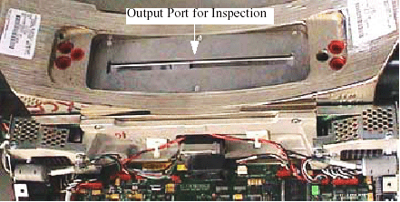

GEMS Proprietary Class: A
Direction 5117807-800, Rev# A
GEMS Proprietary Class: A |
| Required Persons | Preliminary Reqs | Procedure | Finalization |
|---|---|---|---|
| 1 | Timing Not Applicable | 5 mins | Timing Not Applicable |
Procedure Effectivity:
| Assembly: | GANTRY |
| Subassembly: | Tube Plate |
| Purpose: | Inspect Primary Copper Filter |
| Last Revised: | April 2002 |
| Item | Qty | Effectivity | Part# | Manufacturer | |
|---|---|---|---|---|---|
| Bright Flashlight | 1 | - | - | - | |
No consumables required.
No replacement parts required.
No general safety information.
No required conditions.
Remove the Mylar Scan Window.
Launch Diagnostic Data collection, DDC from the Service Desktop.
Select DIAGNOSTICS.
Select DIAGNOSTIC DATA COLLECTION.
Select POSITION TUBE.
Enter 180 and execute.
Select STATIC X-RAY OFF.
Filter AIR.
Slice Collimation Largest Aperture, 4 x 5.00 for example.
Select ACCEPT RX.
Using the flashlight, inspect the primary copper filter by looking down into the collimator output port. See Illustration 1.
Illustration 1: Collimator Output Port

| NOTE: | The copper filter should be clean, dent and scratch free. Discoloration is acceptable. Illustration 2 shows an extremely contaminated copper filter. |
Illustration 2: Extremely Contaminated Copper Filter

If contamination is visible proceed to the cleaning process.
No finalization required.